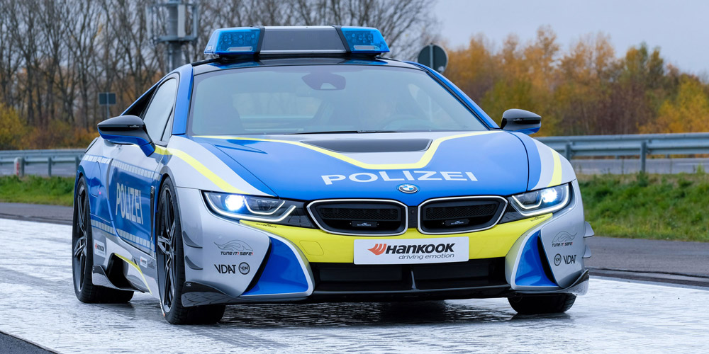
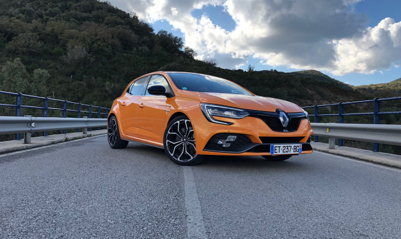
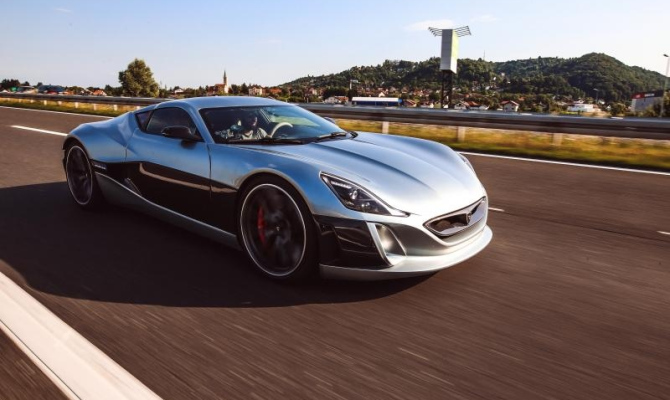
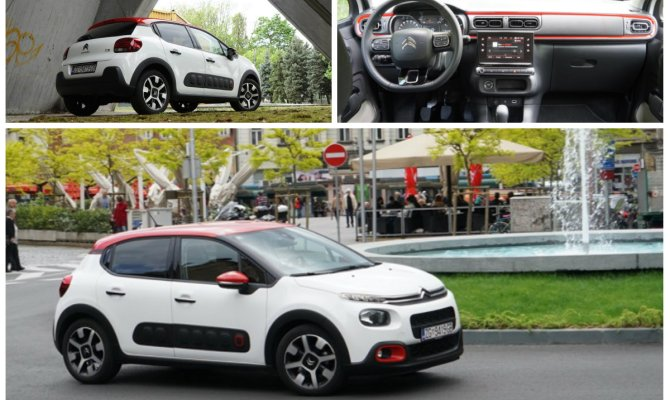

VIJESTI
SVJETSKA PREMIJERA POLICIJSKOG BMW-a: U Njemačkoj i policija podržava tuning, no naglasak je na ‘Tune it Safe!’
Ovo je sasvim jedan novi nivo – Svjetska premijera za novu kampanju “TUNE IT! SAFE!”, u obliku policijskog tuniranog vozila BMW i8 by: AC Schnitzer. Više ...

BRUTALNA JURILICA: Novi Renault Megane R.S., kada ti ni trkaća staza jednostavno nije dovoljna.
On tako dobro prolazi zavoje da želite da vožnja nikada ne stane. Više ...

NAJPOZNATIJI BRITANSKI ČASOPIS ZA AUTOMOBILE ODUŠEVLJEN RIMČEVIM CONCEPT ONE-om: ‘Ovo naprosto oduzima dah’
Do sada je izrađeno samo osam super automobila Concept One koje izrađuje hrvatska tvrtka Rimac Automobili iz Svete Nedelje, a nakon opasne nesreće u kojoj je sudjelovao popularni voditelj Richard Hammond koji se u rimčevom Concept_One automobilu prevrtao niz brežuljke u Švicarskoj, ostalo je samo sedam ovih električnih automobila. Više ...

Citroën C3 jednostavno izgleda trendovski, simpatičnije, urbanije i poželjnije od bilo koga drugoga
Citroën C3 je svima fora i morate se pomiriti s tim da ćete biti u središtu pozornosti. Više ...

GOOGLEOVI AUTI ĆE LIJEPITI PJEŠAKE POPUT MUHA: Patent koji bi trebao ublažiti posljedice nesreća
Američki internetski div Google podnio je zahtjev za patentiranje premaza koji bi pješaka, ako na njega naleti, poput muhe zalijepio o lim Googleovih vozila bez vozača čime bi se izbjegla mogućnost ozljeđivanja odbacivanjem na kolnik ili neki drugi objekt. Više ...